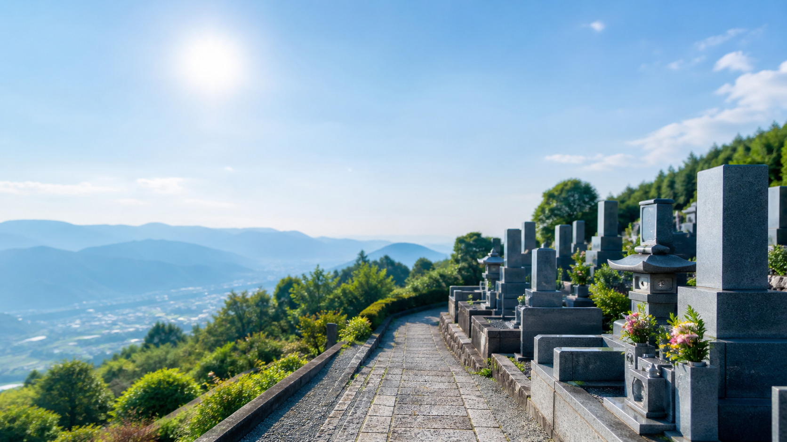
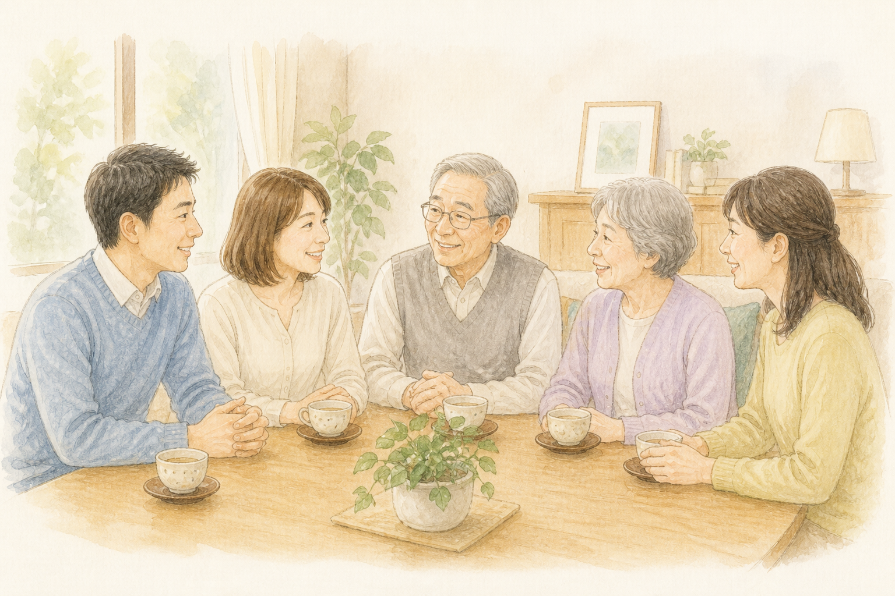
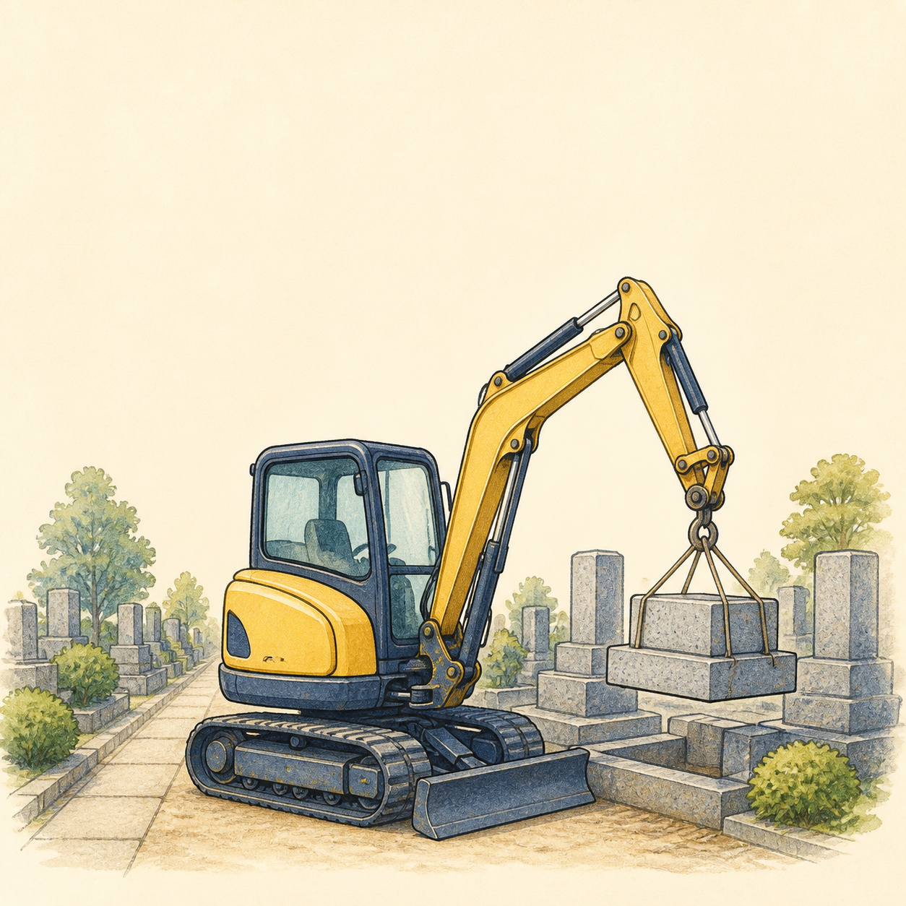
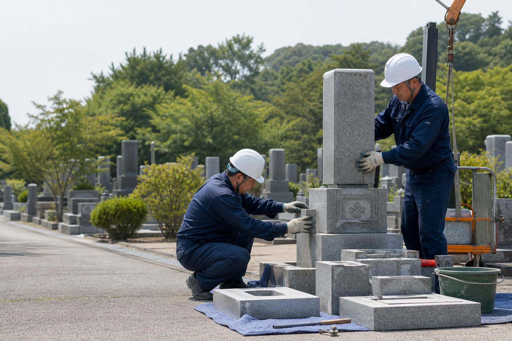
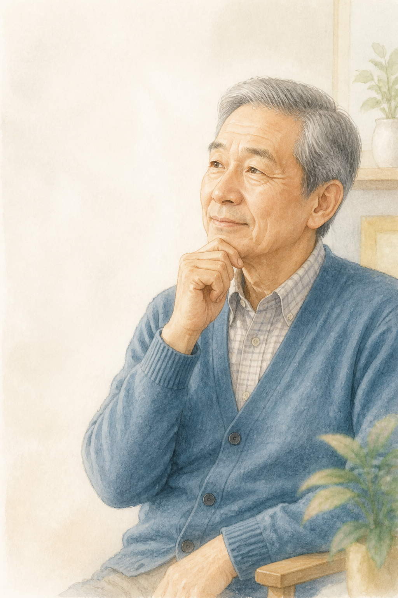
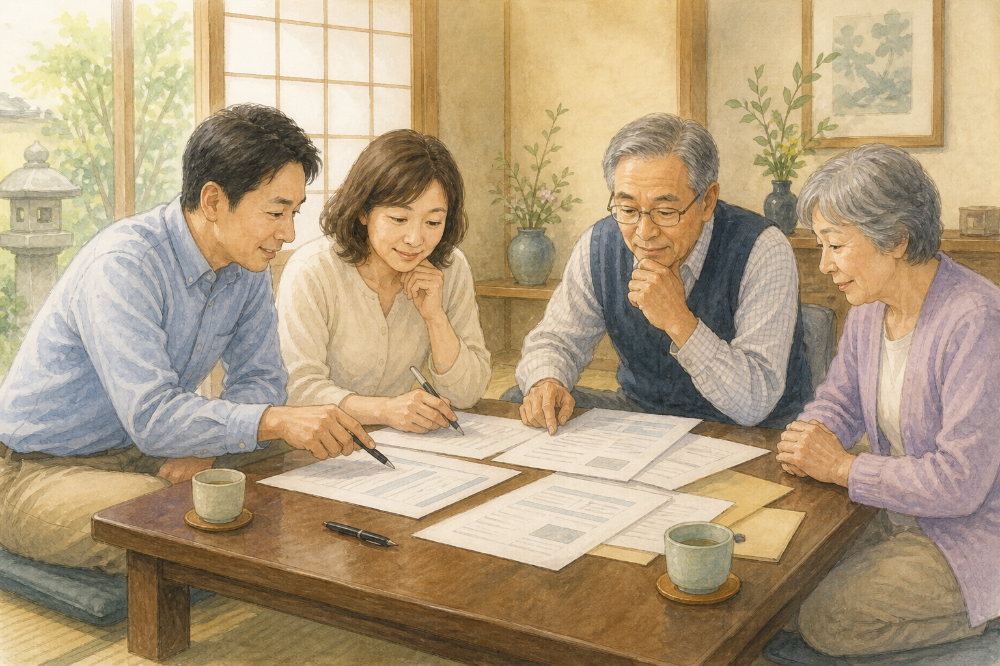

ご家族・ご兄弟へ
反対が起きるのは、決定そのものよりも「知らされていなかった」ことに対してです。結論だけを先に伝えると、感情の話になります。
「こういう理由で考えている。総額はこのくらい。どう思う？」
数字を持って行くと、話が感情から現実に移ります。
本ページはプロモーションを含みます。

墓じまいの費用と手続きガイド
なぜ、これほど幅があるのか。
そして、あなたの場合はいくらなのか。
費用の幅は「お墓の大きさ」と「立地」で、ほとんど決まります。
お墓の条件を入力して相場を確認する 無料・入力1分・相談のみでもOKそろそろだと感じている方へ。
厚生労働省の統計によると、2024年度に行われた改葬（お墓の引っ越し・墓じまい）は、全国で17万6,105件。過去最多でした。
統計を取り始めた1997年度は6万9,862件でしたから、およそ2.5倍です。
理由の1位は「お墓が遠くて通えない」（47.8%）。次いで「墓参りが難しくなった」（37.8%）、「管理費が負担」（31.7%）、「子どもに迷惑をかけたくない」（22.2%）と続きます。
誰も、ご先祖を粗末にしたくてこの選択をしているわけではありません。
手を合わせ続けられる形に、変えるだけです。

墓じまいで最も多い誤解は、「親族全員の同意がないと動けない」というものです。これが、すでに心を決めた方まで足止めしています。
お墓（祭祀財産）を引き継ぎ、その扱いを決めるのは祭祀承継者です（民法897条）。親族全員の同意は、法律上の要件ではありません。
ただしこれは「黙って進めていい」という意味ではありません。実際のトラブルの原因は、権利ではなく伝え方と順番です。あなたには決める立場がある。だからこそ、お伺いを立てるのではなく、落ち着いた相談として持ち込めます。
反対が起きるのは、決定そのものよりも「知らされていなかった」ことに対してです。結論だけを先に伝えると、感情の話になります。
「こういう理由で考えている。総額はこのくらい。どう思う？」
数字を持って行くと、話が感情から現実に移ります。
経験者が「最も大変だった」と答えたのは、費用ではなくお寺とのやり取り（38.5%）でした。多くの方が、この一言が言えずに止まっています。
「長年お世話になってまいりましたが、
私の代で、墓を守り切れなくなりました。
無縁にしてしまう前に、きちんとした形にしたいと考えております。
ご相談させていただけないでしょうか」
管理費の支払いが止まったお墓は、多くの墓地で次のように扱われます。
合祀された遺骨は、ほかの方の遺骨と一緒に土に還ります。あとから取り出すことは、できません。
何もしないという選択は、供養を続けることではありません。
手を合わせる場所を残すのか、失うのか。決められるのは、今のうちです。
墓じまいの費用は、5つの項目の合計です。そのうち大きく動くのは2つだけ。ここさえ押さえれば、自分の総額がおおよそ見えます。
面積だけでなく、山の上・階段の先・道幅が狭いなど、重機が入れない立地では人力作業が増えます。

遺骨を取り出す前に行う法要です。菩提寺の住職にお願いするのが一般的です。
お布施の一種で、墓地使用契約や寺院の規則に定めがない限り、法的な支払い義務はありません。ただし基準がないため、事前の相談が大切です。
役所に申請して取得します。ご自分で動けば費用はほとんどかからず、郵送で対応できる自治体も多くあります。
| 供養の形 | 費用の目安 |
|---|---|
| 合祀墓 | 5万〜30万円 |
| 樹木葬 | 5万〜100万円 |
| 納骨堂 | 20万〜150万円 |
| 海洋散骨（委託） | 3万〜10万円 |
| 海洋散骨（乗船） | 10万〜50万円 |
石材店の見積りは、定価がありません。各社が、自社の人件費・重機・職人の手配・地域相場、そして現場の難易度の見立てをもとに、それぞれ独自に価格を出しています。
同じお墓を見ても、「重機が入る」と判断する店と、「人力になる」と判断する店では、見積りが変わります。
1社だけの見積りでは、それが高いのか妥当なのかを判断する物差しがありません。一生に一度の手続きです。比べる相手がいない状態で、数十万円の判断をすることになります。

墓じまいを考える理由の1位は「お墓が遠くて通えない」（47.8%）。読んでいる方の、およそ半分がこの状況です。
そして遠方の方が本当に心配されているのは、費用より「何度も現地に行けない」ことです。
お墓のある地域の石材店をご紹介しますので、あなたが動く回数は最小限で済みます。
墓じまいはまだ決めていない。家族とも、お寺とも話していない。その段階で業者に連絡していいのか——。いちばん多いご不安がこれです。
見積りを取ることは、進めることではありません。ご家族に相談する前に数字だけ持っておくのは、順番を飛ばすことにはなりません。むしろ、話し合いの材料を用意する行為です。
見積りは、あくまで金額を知るための手続きです。比べてから決められます。
提携している石材店は、この点を確認したうえでご紹介しています。
気に入る見積りがなければ、石材店への連絡は運営が代わりに行います。

「まだ検討中です」で構いません。むしろ、決める前に数字を知っておくほうが、あとの話し合いがずっと楽になります。

墓じまいで最も多いトラブルは、費用でも業者でもありません。「相談せずに進めたこと」です。
けれど、数字と計画があれば、反対していたご家族とも、住職とも、現実の相談ごととして話し合えます。
「総額はおよそ○○万円。
内訳はこう。3社に見積りを取った。
新しい供養先はここを考えている」
見積りを取るのは、決めるためではありません。
家族と、お寺と、きちんと話し合うためです。
STEP 1〜4は、金額が分からないままでは進みません。ご家族に相談するにも、ご住職に相談するにも、供養先を選ぶにも、まず「およそいくらか」が要ります。順番を守るためにこそ、数字が先です。
最初にここを飛ばさないことが、いちばん大切です。切り出し方は、このページの上でご紹介しています。
決まると「受入証明書」が発行されます。
改葬許可申請書・埋蔵証明書・受入証明書を、現在のお墓がある市区町村へ提出します。
ご住職に法要をお願いし、遺骨を取り出します。
更地に戻して管理者へお返しし、完了です。
石材店に工事を依頼するのはSTEP 5です。でも金額を知るのはSTEP 0＝今日で構いません。
見積りは、工事の申し込みではありません。
構いません。見積りは工事の申し込みではないので、取った時点では何も動きません。むしろ数字を持って相談したほうが、話が現実的に進みます。
法律上は必要ありません。お墓の扱いを決めるのは祭祀承継者です（民法897条）。ただし後々のトラブルを避けるため、事前に伝えておくことを強くおすすめします。
はい。お墓のある地域の石材店をご紹介します。見積りや書類のやり取りは現地に行かずに進められ、現地に行くのは多くの場合、閉眼供養と遺骨の取り出しの日だけです。
あります。寺院墓地や民営霊園の多くは「指定石材店制度」を採っており、撤去工事も指定業者しか行えないことがあります。公営霊園は原則として自由に選べます。まず墓地の管理者に「指定石材店はありますか」とご確認ください。指定がある場合、相見積りによる比較はできません。
お墓を承継している方（祭祀承継者）が負担するのが一般的です。ただし決まりはなく、ご兄弟で分担されるケースも多くあります。
離檀料はお布施の一種で、墓地の使用契約や寺院の規則に定めがない限り、法的な支払い義務はありません。高額を提示された場合は、消費生活センターや弁護士に相談する選択肢もあります。
その段階で問題ありません。むしろ、金額を知らないまま決断したり、決断できないまま何年も過ぎたりするほうがおすすめできません。相場を知ることは、決めることではありません。
できません。ごみとして捨てる、私有地に埋めるといった行為は認められておらず、焼骨を埋蔵できるのは法律上、墓地として許可された区域に限られます。一方、自宅で保管する手元供養や、節度をもって行う散骨はこれにあたりません。いずれにしても、納め先を決めてから手続きに進みます。
まずは、ご家族と話し合うための相場を知るところから始められます。